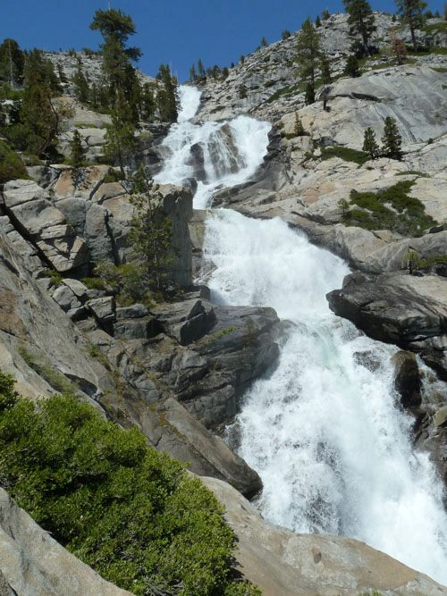
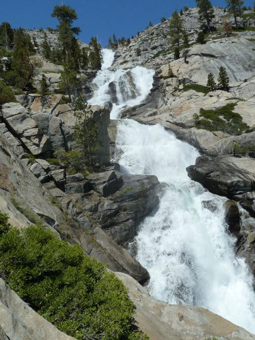
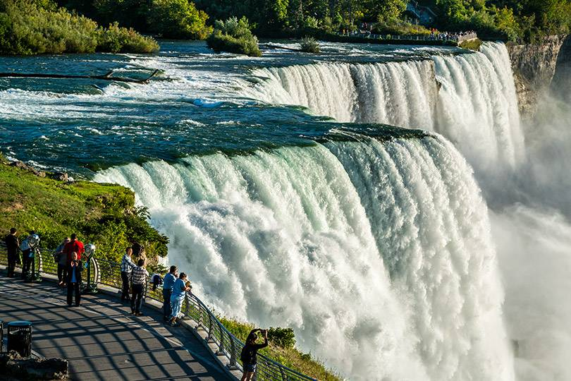

Lake Tahoe

Lake Tahoe is a large freshwater lake in the Sierra Nevada Mountains, straddling the border of California and Nevada. It’s known for its beaches and ski resorts. On the southwest shore, Emerald Bay State Park contains the 1929 Nordic-style mansion Vikingsholm. Along the lake’s northeast side, Lake Tahoe Nevada State Park includes Sand Harbor Beach and Spooner Lake, a gateway to the long-distance Tahoe Rim Trail.
There are many activities to do in Lake Tahoe. In the summer, you can go hiking, biking, swimming, kayaking, paddle boarding, and more. In the winter, you can go skiing, snowboarding, snowshoeing, and more. There are also many restaurants and shops to visit.
Photo Gallery


 


Best Things to Do
- Go to the beach
- Go hiking
- Go skiing
- Go snowboarding
- Go kayaking
- Go paddle boarding
- Go shopping
- Go to a restaurant
Niagara Falls

Niagara Falls is a city on the Niagara River, in New York State. It’s known for the vast Niagara Falls, which straddle the Canadian border. In Niagara Falls State Park, the Observation Tower, at Prospect Point, juts out over Niagara Gorge for a view of all 3 waterfalls. Trails from the Niagara Gorge Discovery Center lead to other viewpoints. The Aquarium of Niagara is home to Humboldt penguins, seals, and sea lions.
There are many activities to do in Niagara Falls. You can go on a boat tour, go hiking, go to the aquarium, go to the casino, and more. There are also many restaurants and shops to visit.
Photo Gallery


Best Things to Do
- Go on a boat tour
- Go hiking
- Go to the aquarium
- Go to the casino
- Go shopping
- Go to a restaurant
Taj Mahal
The Taj Mahal is an ivory-white marble mausoleum on the southern bank of the river Yamuna in the Indian city of Agra. It was commissioned in 1632 by the Mughal emperor Shah Jahan to house the tomb of his favorite wife, Mumtaz Mahal; it also houses the tomb of Shah Jahan himself. The tomb is the centerpiece of a 17-hectare (42-acre) complex, which includes a mosque and a guest house, and is set in formal gardens bounded on three sides by a crenellated wall.
There are many activities to do in the Taj Mahal. You can go on a tour, go to the museum, go to the mosque, and more. There are also many restaurants and shops to visit.
Photo Gallery


Best Things to Do
- Go on a tour
- Go to the museum
- Go to the mosque
- Go shopping
- Go to a restaurant